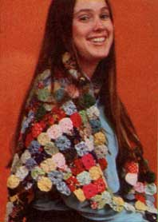
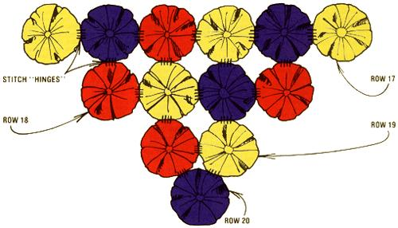

You've probably heard the old adage, "Necessity is the mother of invention"? Well, that cliché certainly holds true in my case! I like to design and sew my own clothes, you see, but I've always had trouble buying coats or sweaters that look right when worn over a variety of skirt and dress lengths. After experiencing the continual frustration of taking up and letting down the hems of my homemade wraps, I was about ready to give up on finding an appropriate "top layer" for my pioneer-style wardrobe . ... and then I "discovered" the yo-yo shawl.
Most of you have, I'm sure, seen examples of traditional "granny circle" bedspreads made of contrasting rounds of fabric . . . all of which are puffed and joined together to form an attractive coverlet. Well, I simply adapted the 200-year-old pattern used to craft those quilts and produced a "new-fashioned" garment that's perfect to wear with dresses, long skirts, or even jeans. The yo-yo shawl is amazingly easy to assemble . . . and it probably won't cost you a single penny to make!
You can, for instance, likely collect free material from your neighbors and kinfolk . . . or perhaps dig into your own closets and drawers for outgrown clothing. Your sewing friends might be able to pass along some scraps, too. (In fact, just a little scavenging will probably bring you enough material to make several shawls similar to the one pictured here.) Try to find fabrics in a wide range of textures and patterns . . . since the more variety a yo-yo garment has, the more authentic it will look (our grandmothers took special pride in using no two circles alike). Any light- to medium- weight cotton blend-or woven synthetic-will work fine. (You should, however, avoid heavy polyester, since it doesn't pucker well enough to produce a good "yoyo")
Once you've assembled your material, remove all the zippers, buttons, or other trim . . . and save those notions for future needs. Then-using a seam ripper or a single-edged razor blade-take each garment apart . . . and iron the separate pieces until they're flat and wrinklefree.
CUT FROM A PATTERN
Before you actually begin to make the granny circles, you'll need to cut some cardboard models for them. Simply use a compass to draw several four-inch-diameter circles on a sheet of heavy cardboard, and cut the shapes out.
Next, layer four or five pieces of cloth on a flat surface and position one round pattern on top of the stack. (You may want to secure the disk in place with a pin.) Cut around the edge of the cardboard, being careful not to let the layers of cloth slip. (If you find it difficult to produce perfect fabric circles using this technique, you might prefer, instead, to trace around your pattern with a pencil or tailor's chalk . . . and then cut the material on the line.)
MAKING A YO-YO
After you've snipped out as many circles as you need for your project (the shawl in the photos, for instance, required 381), you'll be ready to form each disk into the characteristically puffy shape that I call a yo-yo.
Thread an ordinary needle with a single strand of medium-weight white sewing cotton or polyester. Grasping the circle in one hand-with the dull (or "wrong") side of the fabric facing youuse long running stitches to baste down a 1/4" hem all around the edge. When you've completed the circumference of the circle, push the needle through to the right side of the material.
Then begin slowly drawing up the thread and forcing the fabric to gather . . . be sure its hem is turning toward the inside. A smooth, firm pull will shape the circle into a round puff with one small opening.
Next, hold the thread tightly-so the gathering stays put-and slip the needle back through a couple of folds toward the center of the yo-yo. At that point, you can take two or three knotted stitches to hold the round piece in shape. Finally, tie off the end of your thread and flatten the puff out. (You may have to adjust the finished yo-yo slightly, by tugging at its edges, to center the hole.)
Each yo-yo functions as an individual building unit. Once you've learned how to construct one, you simply repeat the process until you've accumulated enough fabric puffs to make up the garment-or bedspread-you want. After that, all you'll have to do is join the circles together in long rows . . . until the craftwork is complete.
SINGLES INTO ROWS. . .
You'll start to assemble your shawl, of course, by sewing two yo-yos together . . . as that pair will form the beginning of the first (and longest) row. Place two circles face to face (they should be of contrasting colors and designs), with their right sides together . . . and line up their center holes (which will be on the outside of the completed garment). Bind the little double disks-using tiny whip stitches-with a "hinge" : a seam of only 1/8" to 1/4" in length along the top. Knot the thread tightly and tie it off.
Once they're securely joined, you can unfold the "clamshell" halves and attach a third yo-yo to the second one. Continue the process of unfolding each new circle and adding another until the whole row is finished. As you fasten each puff to the sequence, be sure the stitching is always directly across from the previous seam . . . so that you'll end up with a neat, straight line.
My shawl has 38 units in its first row of yoyos . . . and each successive line gets shorter by two units, giving the completed cover-up a triangular shape. You may want to make all 20 rows of the shawl before you put it together . . . or you can do as I do, and add each row-as it's constructed-to the previous one, allowing the garment to blossom gradually like a spring flower garden .
... AND ROWS INTO A SHAWL!
When you're ready to join one row to another, place the first string of yo-yos face up on a table or in your lap . . . and lay the next line face down on top of it. To make the width of the shawl gradually decrease, you'll need to attach the first puff in the shorter chain-moving from left to right-to the second yo-yo in the longer row. Then simply continue down the line, stitching each pair of circles together. (When you finish the seams, of course, there will be one yo-yo left over on the other end of the long row, too.)
Attach 19 lines in this way. The final "row" consists of a single unit . . . which will be positioned between (and below) the two circles of Row 19 and must be sewn to both of them in a triangular arrangement. (Study the diagram that accompanies this article for both row placement and stitching patterns.)
WEAR IT WELL
Once the final yo-yo is in place, your garment will be finished! Turn the shawl face up and admire your handiwork. You've just made a unique, homecrafted piece of clothing that will go well with almost anything you may have in your closet.
And when the wrap begins to receive admiring glances from acquaintances-as mine does-you won't have to admit how easy it was to make . . . or even that it's a totally no-cost creation. Just remember to volunteer your services as a "ragpicker" when any of your friends or neighbors clean out their bureaus and wardrobes!
|
 A closer view of the puffed... and a shawl that will top off almost any outfit! |
 YO-YO SHAWL CONSTRUCTION Each row of yo-yo shawl is assembled horizontally... and then the lines are connected to one another with vertical hitches. To give the garment a traingle shape, the first unit of each new row is sewn to the second puff of the row above. As the rows decrease in width (by units of two), you'll finally come to the last piece of the shawl, which is a single yo-yo. This sphere is centered between the two circles of the row above it, and then stitched to each in a diagonal pattern. |
|